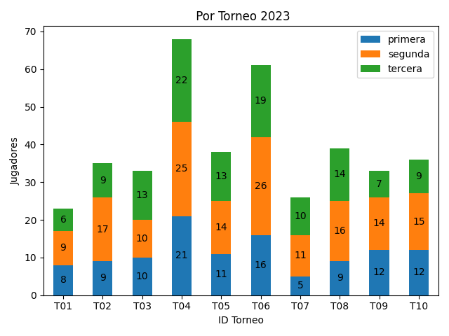
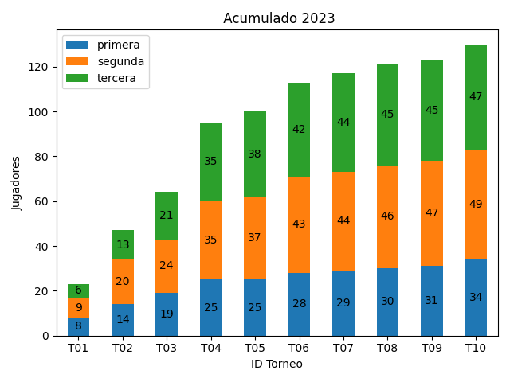

Estadísticas 2023¶
Nivel de Juego: torneo a torneo¶
Evolución del nivel de juego a medida que avanza el campeonato.
Campeonato: torneo a torneo¶
Primera¶
Evolución de los puntos de campeonato a medida que avanza el año.
Segunda¶
Evolución de los puntos de campeonato a medida que avanza el año.
Tercera¶
Evolución de los puntos de campeonato a medida que avanza el año.
Participación por torneo¶
Cantidad de jugadores que participaron en cada torneo. Si un jugador jugó dos categorías se cuenta dos veces (una vez en cada categoría).

Participación acumulada por categoría¶
Cantidad de jugadores que se han sumado a cada categoría. Cuenta a los jugadores distintos que participaron en al menos un torneo durante el año.
